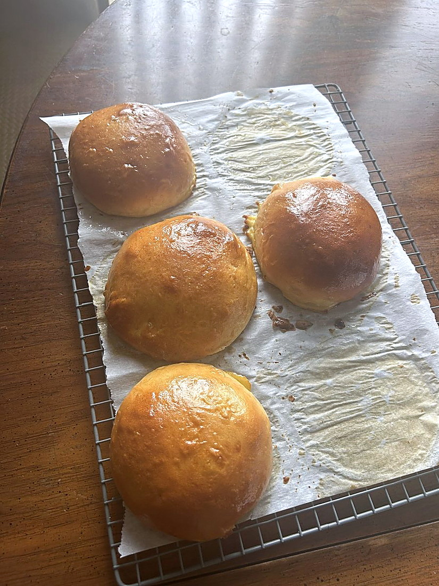

Baking / Bread
Brioche Burger Buns

- Yield
- 6 buns
- Unit Weight
- 95-105 g each
- Active Time
- 5 h including rises
- Rest
- 1-1.5 h first rise, then 1-2 h after shaping
- Oven
- 375F / 190C, 16-18 min
- Source
- Joshua Weissman, joshuaweissman.com/recipes/best-burger-buns-recipe
- Energy Cost
- $1.65 (18 min bake plus 30 min, 3.5 kW at 59 cents/kWh)
Ingredients
Batch
- Whole milk, for the tangzhong: 60 g
- Water, for the tangzhong: 27 g
- Bread flour, for the tangzhong: 20 g
- Whole milk: 120 g
- Instant yeast: 9 g
- Bread flour: 320 g, plus more for the bench
- Granulated sugar: 35 g
- Fine sea salt: 7 g
- Egg, room temperature: 1 large
- Egg yolk, room temperature: 1 large
- Unsalted butter, softened: 42 g
- Egg, for the wash: 1 large
- Whole milk, for the wash: a splash
- Melted or browned butter, to finish: as needed
Method
- Tangzhong: whisk the milk, water and flour in a small pan, then cook over medium heat, whisking constantly, until it thickens to a paste. Scrape out and set aside.
- Warm the milk to 95F, whisk in the yeast, leave 8 minutes somewhere warm.
- Whisk the dry ingredients in the mixer bowl. With the hook on low, stream in the milk and yeast.
- Add the tangzhong, the egg and the yolk. Mix on medium-low until even, scraping down as you go.
- Add the butter a piece at a time, fully incorporating each before the next.
- Knead 5 to 8 minutes more on medium-low until smooth.
- Fold the edges to the centre, then roll seam-side down on the bench to a tight ball. Rise in a greased bowl under a damp towel, 1 to 1.5 hours, until doubled.
- Punch down and divide into 6 pieces of 95 to 105 g.
- Shape each: stretch and fold the edges in, flip seam-side down, then drag toward you against the board to build tension, rotating 90 degrees and repeating around the whole perimeter.
- Space 6 cm apart on greased parchment. Cover with an inverted tray so they do not skin.
- Rise 1 to 2 hours until doubled.
- Heat the oven to 375F. Brush with the egg and milk wash.
- Bake 16 to 18 minutes to a deep golden brown. Brush generously with melted butter straight out of the oven, then cool completely.
Notes
- A tangzhong plus an enriched dough, so it is part Japanese milk bread and part brioche. The cooked flour paste is what keeps them soft for days.
- Only 42 g butter to 320 g flour, far leaner than the maritozzo, because these carry a burger.
- Cover with an inverted tray rather than a cloth. A skin on the dough stops the rise.
- Buttering them hot is what gives the sheen.
Learnings
Not made yet.